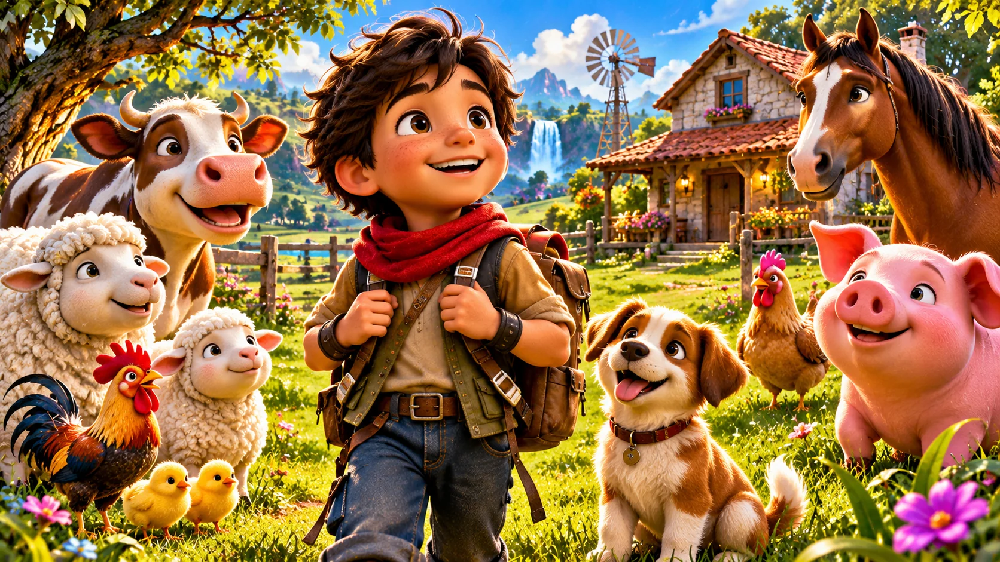

01 / PLAYABLE PROJECT
01 / PLAYABLE PROJECTEDUCATIONAL ADVENTURE
Niko's Great Adventure
Explore a welcoming world of discovery, playful challenges, and learning through play.
Ages 3–9Browser game
From the first playable adventure to the worlds still taking shape, explore the imagination behind Don Yovanny's games.
Explore the collection ↓One playable project. Two glimpses of what's next. Every world starts with a story.
01 / PLAYABLE PROJECTExplore a welcoming world of discovery, playful challenges, and learning through play.
 02 / FUTURE CONCEPT
02 / FUTURE CONCEPTImagine a magical land of soaring dragons, mysterious castles, and new discoveries.

03 / FUTURE CONCEPTPicture a cheerful countryside filled with friendly animals, exploration, and surprises.
Future concepts are early visual ideas, not announced releases. Artwork is illustrative and may differ from final gameplay.
Our first interactive adventure brings colorful worlds and approachable challenges to curious young explorers. Ready to discover where the journey begins?
Discover Niko's adventure ↗Step inside the development lab to explore the ideas, experiments, and creative process.
Visit the development lab ↗